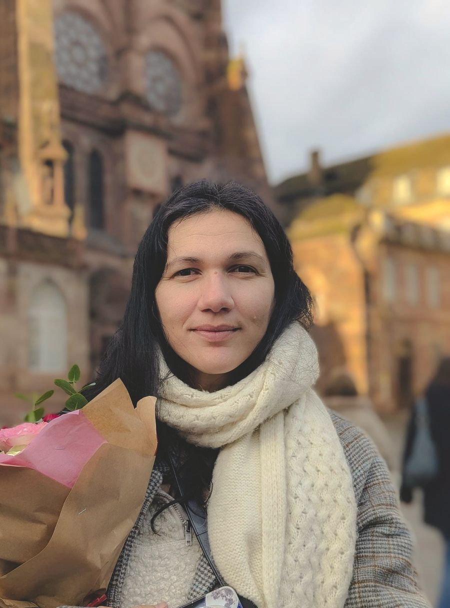
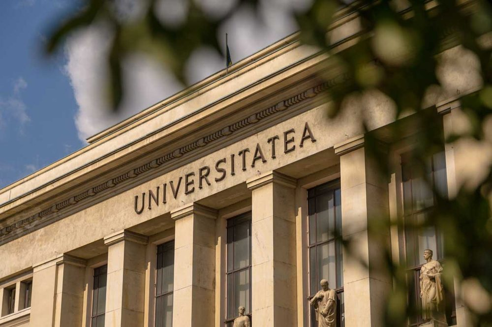
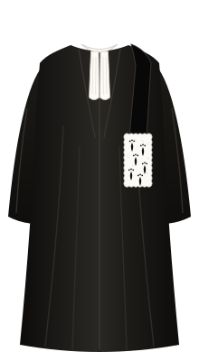
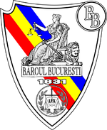
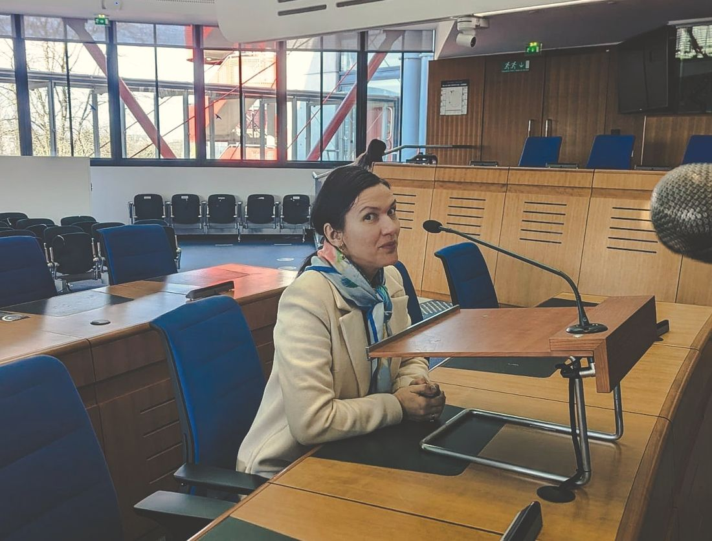
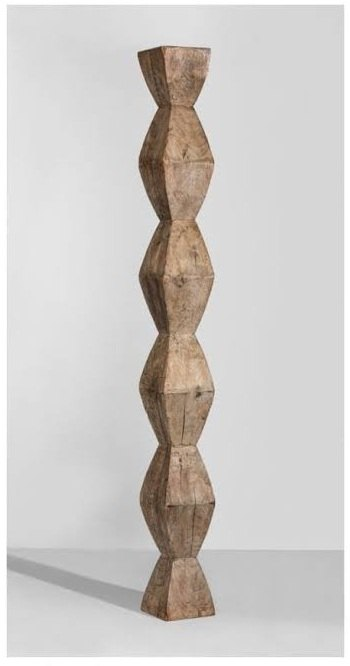
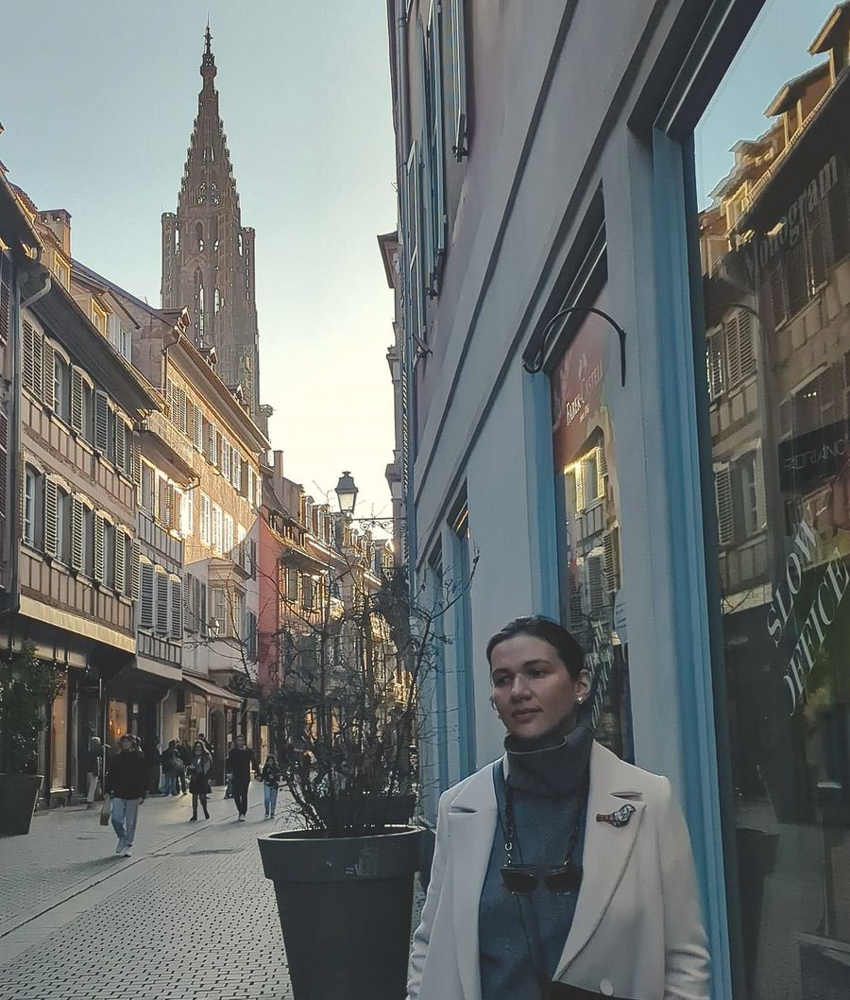
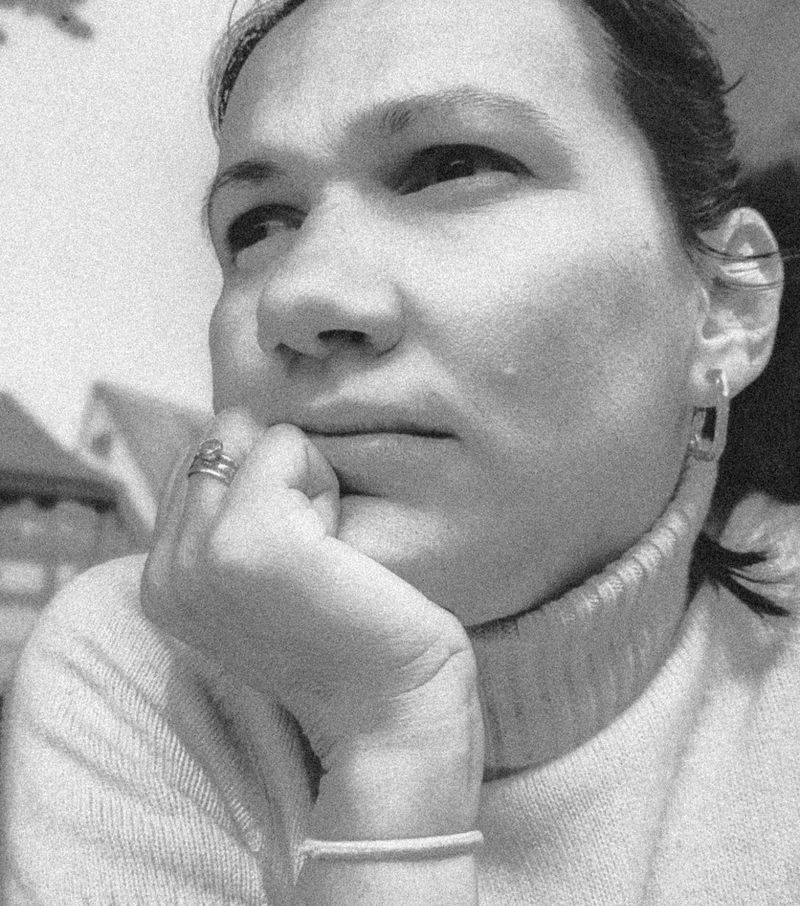

Despre mine

Ioana Stoica
Sunt avocat din 2010. Mi-am început activitatea în Baroul București, ca avocat stagiar și apoi colaborator în societăți profesionale de avocatură, iar din 2022 îmi exercit profesia în Baroul Argeș, în cabinet individual.
a Barourilor din România
-
2006–2010
Facultatea de Drept
Universitatea din București.

-
2010–2011
Master în Dreptul Afacerilor
Universitatea „Nicolae Titulescu”.
-
2010
Intrarea în Baroul București

Integritas
- Perioada de formare, alături de mari societăți de avocatură din București
-
SCPA Coltuc și Asociații
Avocat stagiar.
-
SCPA Ene, Enescu și Asociații
Avocat colaborator.
-
SCPA Iordache, Trofin și Asociații
Avocat colaborator.
-
Pitești
Cabinetul Individual de Avocat Antoniu-Constantin Popescu
Astfel m-am format pentru a ajunge la o colaborare mai restrânsă, alături de av. Antoniu-Constantin Popescu.
- În tot acest timp, instanțe din Europa de Vest, vizitate în scop profesional
-
Spania
Juzgado nº 3 de Albacete
-
Germania
Amtsgericht Tiergarten, Berlin (instanță penală)
-
Italia
Tribunale di Bolzano
-
Olanda
Tribunalele din Rotterdam și Dordrecht
-
1 noiembrie 2022
Baroul Argeș
Transferul din Baroul București în Baroul Argeș și înființarea Cabinetului Individual de Avocat „Ioana Stoica”.
-
2025–2026
Curtea Europeană a Drepturilor Omului
În anii 2025–2026 am avut ocazia să vizitez în scop profesional prestigioasa Curte Europeană a Drepturilor Omului și să studiez îndeaproape practica acesteia în raport cu petițiile cetățenilor români.

Într-o sală de audieri, la Strasbourg

După acumularea experienței juridice internaționale, aleg să îmi pun cunoștințele și energia în slujba voastră, a românilor de pretutindeni, din țară și diaspora. Lucrez pe cont propriu, fără grabă. Am ales această cale, pentru că, așa cum spunea odinioară Brâncuși lui Rodin:
„La umbra marilor stejari nu poate crește decât iarbă.”


Ai o problemă juridică? Spune-mi despre ea, iar eu îți spun deschis ce se poate face.
Cere consultație